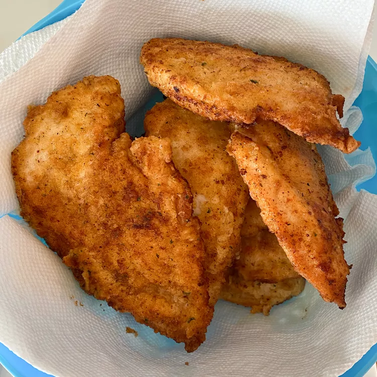

Home
Garlic Chicken-Fried Chicken

Description
Crispy fried chicken with a bold garlic flavor. The golden coating stays crunchy while the meat inside stays
juicy, making it a great choice for a family dinner or a weekend meal.
Ingredients
- 2 teaspoons garlic powder, or more to taste
- 1 teaspoon ground black pepper
- 1 teaspoon salt
- 1 teaspoon paprika
- ½ cup seasoned bread crumbs
- 1 cup all-purpose flour
- ½ cup milk
- 1 egg
- 4 skinless, boneless chicken breast halves - pounded thin
- 1 cup oil for frying, or as needed
Steps
- Mix garlic powder, ground black pepper, salt, paprika, bread crumbs, and flour in a shallow dish. Whisk milk
and egg together in a separate shallow dish.
- Heat oil in an electric skillet set to 350 degrees F (175 degrees C). Dip chicken into the egg and milk,
then dredge in the dry ingredients until evenly coated.
- Fry chicken in the hot oil until golden brown and an instant-read thermometer inserted into the center reads
at least 165 degrees F (74 degrees C), about 5 minutes per side. Remove from the oil with a slotted spatula
and serve.